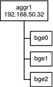
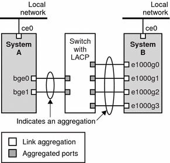
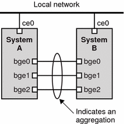

Previous
Previous
Administering Link Aggregations
The Solaris OS supports the organization of network interfaces into link aggregations. A link aggregation consists of several interfaces on a system that are configured together as a single, logical unit. Link aggregation, also referred to as trunking, is defined in the IEEE 802.3ad Link Aggregation Standard.
The IEEE 802.3ad Link Aggregation Standard provides a method to combine the capacity of multiple full-duplex Ethernet links into a single logical link. This link aggregation group is then treated as though it were, in fact, a single link.
The following are features of link aggregations:
Increased bandwidth - The capacity of multiple links is combined into one logical link.
Automatic failover/failback - Traffic from a failed link is failed over to working links in the aggregation.
Load balancing - Both inbound and outbound traffic is distributed according to user selected load balancing policies, such as source and destination MAC or IP addresses.
Support for redundancy - Two systems can be configured with parallel aggregations.
Improved administration - All interfaces are administered as a single unit.
Less drain on the network address pool - The entire aggregation is assigned one IP address.
Link Aggregation Basics
The basic link aggregation topology involves a single aggregation that is composed of a set of physical interfaces. You might use the basic link aggregation in the following situations:
For systems that run an application with distributed heavy traffic, you can dedicate an aggregation to that application's traffic.
For sites with limited IP address space that nevertheless require large amounts of bandwidth, you need only one IP address for a large aggregation of interfaces.
For sites that need to hide the existence of internal interfaces, the IP address of the aggregation hides its interfaces from external applications.
Figure 6-3 shows an aggregation for a server that hosts a popular web site. The site requires increased bandwidth for query traffic between Internet customers and the site's database server. For security purposes, the existence of the individual interfaces on the server must be hidden from external applications. The solution is the aggregation aggr1 with the IP address 192.168.50.32. This aggregation consists of three interfaces,bge0-2. These interfaces are dedicated to sending out traffic in response to customer queries. The outgoing address on packet traffic from all the interfaces is the IP address of aggr1, 192.168.50.32.
Figure 6-3 Basic Link Aggregation Topology
Figure 6-4 depicts a local network with two systems, each of which has an aggregation configured. The two systems are connected by a switch. If you need to run an aggregation through a switch, that switch must support aggregation technology. This type of configuration is particularly useful for high availability and redundant systems.
In the figure, System A has an aggregation that consists of two interfaces, bge0 and bge1. These interfaces are connected to the switch through aggregated ports. System B has an aggregation of four interfaces, e1000g0 throughe100g3. These interfaces are also connected to aggregated ports on the switch.
Figure 6-4 Aggregation Topology With Switch
Back-to-Back Link Aggregations
The back-to-back link aggregation topology involves two separate systems that are cabled directly to each other, as shown in the following figure. The systems run parallel aggregations.
Figure 6-5 Basic Back-to-Back Aggregation Topology
In this example, device bge0 on System A is directly linked to bge0 on System B, and so on. In this way, Systems A and B can support redundancy and high availability, as well as high-speed communications between both servers. Each server also has interface ce0 configured for traffic flow with the local network.
The most common application for back-to-back aggregations is mirrored database servers. Both servers need to be updated together and therefore require significant bandwidth, high-speed traffic flow, and reliability. Data centers are the most common users of back-to-back link aggregations.
Policies and Load Balancing
If you plan to use a link aggregation, consider defining a policy for outgoing traffic. This policy specifies how you want packets to be distributed across the available links of an aggregation, thus establishing load balancing. The following are the possible layer specifiers and their significance for the aggregation policy:
L2 - Determines the outgoing link by hashing the MAC (L2) header of each packet
L3 - Determines the outgoing link by hashing the IP (L3) header of each packet
L4 - Determines the outgoing link by hashing the TCP, UDP, or other ULP (L4) header of each packet
Any combination of these policies is also valid. The default policy is L4. For more information, refer to the dladm(1M) man page.
Aggregation Mode and Switches
If your aggregation topology involves connection through a switch, you must note whether the switch supports link aggregation control protocol (LACP). If the switch supports LACP, you must configure LACP for the switch and the aggregation. However, you can define one of the following modes in which LACP is to operate:
Off mode - The default mode for aggregations. LACP packets, which are called LACPDUs are not generated.
Active mode - The system generates LACPDUs at regular intervals, which you can specify.
Passive mode - The system generates an LACPDU only when it receives an LACPDU from the switch. When both the aggregation and the switch are configured in passive mode, they cannot exchange LACPDUs.
See the dladm(1M) man page and the switch manufacturer's documentation for syntax information.
Requirements for Aggregations
Your aggregation configuration is bound by the following requirements:
You must use the dladm command to configure aggregations.
An interface that has been plumbed cannot become a member of an aggregation.
All interfaces in the aggregation must run at the same speed and in full duplex mode.
You must set the value for MAC addresses to "true" in the EEPROM parameter local-mac-address? For instructions, refer to SPARC: How to Ensure That the MAC Address of an Interface Is Unique.
"Legacy" data link provider interfaces (DLPI ), such as the ce interface do not support Solaris link aggregations. Instead, you must configure aggregations for legacy devices by using Sun Trunking. You cannot configure aggregations for legacy devices by using the dladm command. For more information about Sun Trunking, refer to the Sun Trunking 1.3 Installation and User's Guide.